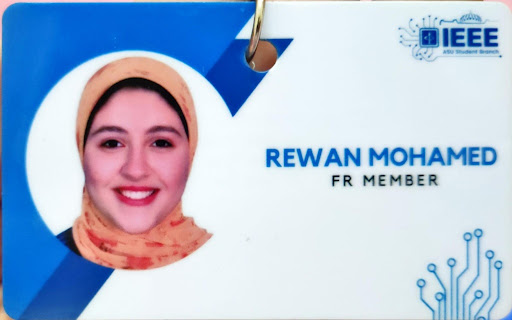
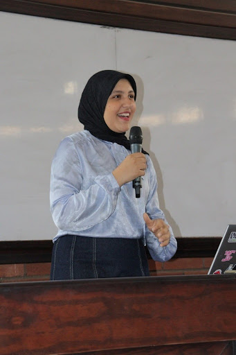
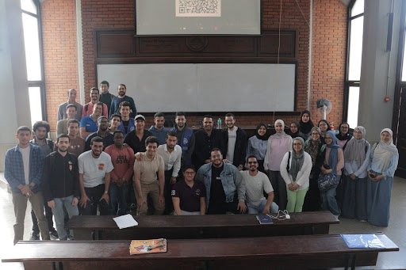
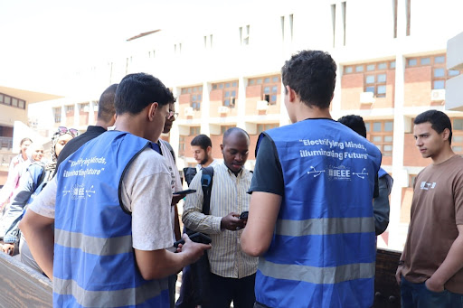
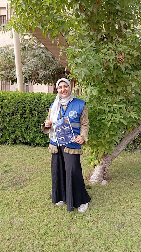

I joined IEEE Ain Shams University Student Branch with a clear goal from the beginning: to grow within a technical community that values knowledge sharing, collaboration, and real impact. I was looking for more than just participation—I wanted to be in an environment where I could both learn and contribute meaningfully.
Over three years, I progressed from Freshman Representative to Head, and eventually Chairwoman. Each stage gave me a different perspective, starting from understanding how teams operate, to leading initiatives and shaping the overall direction of the branch.

My involvement was centered around organizing technical workshops and events that bridge the gap between theory and practice. I worked with different teams to deliver multiple seasons of workshops, reaching a large number of students and maintaining consistent engagement. This required not only planning, but also understanding what students actually need and adjusting content accordingly.
One of the key experiences during this journey was contributing to Electro Power, a two-day event that we introduced as a new concept in the faculty. The structure was intentional: the first day focused on theoretical foundations, while the second day was dedicated to practical, hands-on application. The goal was to create a more complete learning experience, and seeing that idea come to life was one of the most rewarding parts of my work in IEEE.


As I moved into leadership roles, my focus shifted toward supporting my team and creating opportunities for others. I was involved in expanding the branch’s activities, including contributing to the establishment of the Solid-State Circuits Society (SSCS) chapter and supporting career talks and outreach efforts that reached a wider audience.
For me, IEEE was never just about positions—it was about building a community where knowledge is shared and opportunities are accessible. This experience shaped how I approach leadership, emphasizing responsibility, consistency, and creating impact that extends beyond individual contributions.
